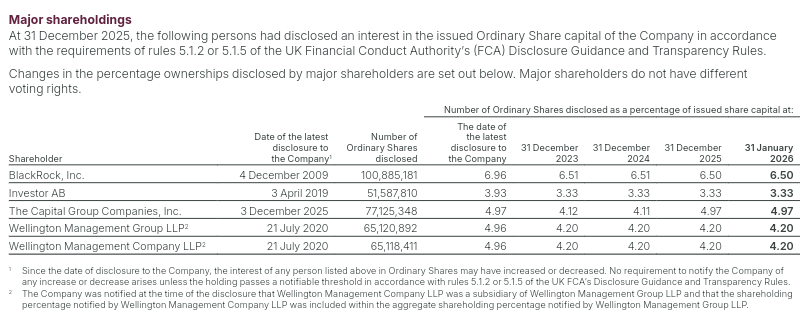
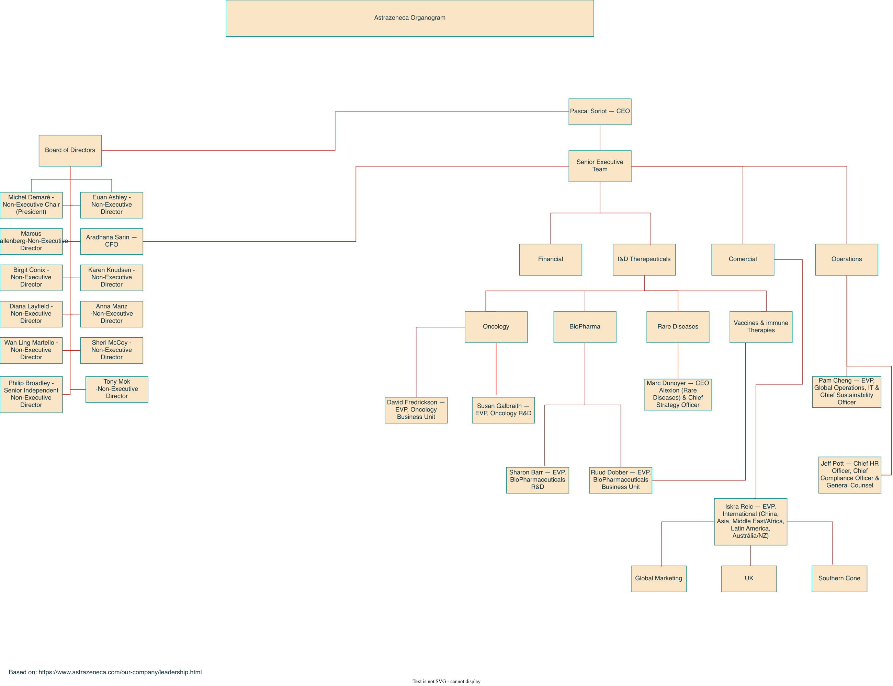

| Section | Owner | Status in this draft |
|---|---|---|
| 1 Introduction (profile, SDGs) | NB | Written from his notes and slides, corrected against the AR |
| 2 Organisation | DC | Written only with what the AR, the chart and the course material support |
| 3.1–3.2 Values, mission, vision; objectives per level | SN | Pending nothing delivered yet |
| 3.3 SWOT and strategy | JC | Written translated, with factual corrections |
Introduction and structure of the report
1Introduction
1.1Scope of the report
This report analyses AstraZeneca PLC (“AstraZeneca” or “the Group”) as part of the Management course. It follows the group's work plan: Part I presents the organisation and Part II develops the functions of management.
This first version covers the presentation of the organisation, its contribution to the UN Sustainable Development Goals (SDGs), its organisational structure, and the SWOT analysis with the strategy that follows from it. The sections that have no content yet are marked as Pending.
Unless stated otherwise, the data come from AstraZeneca's Annual Report and Form 20-F Information 2025 {AR}, cited by the page printed on the page itself. Values are in US dollars: “$m” means millions and “$bn” means billions. Analytical judgements by the group are labelled Analysis and kept apart from the facts.
1.2Type of organisation
AstraZeneca PLC is a public limited company, limited by shares, incorporated and domiciled in England and Wales {AR|p. 199}. It was incorporated on 17 June 1992 under the Companies Act 1985, and its registered office and corporate headquarters are in Cambridge, United Kingdom {F20|Item 4.A}{AR|p. 230}. In Portuguese terms it corresponds to a listed sociedade anónima, a legal form the course material cites among private companies {INT|p. 5}.
The course material classifies organisations by who benefits from them. AstraZeneca falls under the commercial-interest type, which is usually a private firm whose main benefit goes to its owners {INT|pp. 4–5}, and under the private type when classified by who holds the capital {INT|p. 6}. It is a for-profit company: in 2025 it made a profit for the period of $10,233m and paid dividends of $4,846m {AR|p. 125}, corresponding to a full-year dividend of $3.20 per share {AR|p. 3}.
Its shares are listed on the London Stock Exchange, Nasdaq Stockholm and the New York Stock Exchange {AR|p. 71}. Since 2 February 2026 the ordinary shares are listed directly on the NYSE, replacing the earlier US listing of American Depositary Shares on Nasdaq {AR|p. 50}.
- NB's notes say “minimum share capital of £50,000”. No source in the folders supports it, so it was left out. Keep it only with a legal source.
- NB's slide 3 says “pharmaceutical and biotechnological”. The AR only says “pharmaceutical” {AR|p. 8}. This draft follows the AR.
- The Blau & Scott classification is taken from the course material, not from the book [Lisboa et al.] listed on his slide. Cite the book only after confirming the page where it says this.
1.3Capital holders
On 31 December 2025 the share capital comprised 1,550,907,927 ordinary shares of $0.25 each, plus 50,000 redeemable preference shares {AR|p. 224}. The AR states that major shareholders do not have different voting rights {AR|p. 225} and describes a geographically diverse shareholder base {AR|p. 76}. Four groups held 3% or more.
| Shareholder | Shares at last disclosure | % at last disclosure | % at 31 Dec 2025 |
|---|---|---|---|
| BlackRock | 100,885,181 | 6.96 | 6.50 |
| The Capital Group Companies | 77,125,348 | 4.97 | 4.97 |
| Wellington Management Group LLP | 65,120,892 | 4.96 | 4.20 |
| Investor AB | 51,587,810 | 3.93 | 3.33 |
Table 1. Shareholders with 3% or more of the voting rights. Wellington Management Company LLP, a subsidiary, is included in the Wellington Management Group figure. Source: {AR|p. 225}.
The largest notified holding is therefore 6.50%, and no other holder reported a notifiable interest above these four.
Original capture from the AR (p. 225), as collected by NB

- Wellington Management Group LLP (4.20%) was missing from NB's slide 2, which listed BlackRock, Capital Group and Investor AB only. It ranks above Investor AB, so it is included here.
- The slide says “no majority or controlling shareholder”. The AR does not use that wording, so the text above only states the facts (largest holding 6.50%; same voting rights).
- Investor AB is described as Swedish in NB's notes. The AR table does not give nationality, so it is not stated here.
1.4Activities and scope
AstraZeneca describes itself as a global, science-led and patient-focused pharmaceutical business, committed to excellence in the research, development, manufacturing and commercialisation of prescription medicines across primary care, specialty care and rare diseases {AR|p. 8}.
The commercial organisation is split into three regions: the US, Europe-Canada and International, which includes Australia, New Zealand and the Emerging Markets (China among them). Japan reports separately {AR|p. 32}. Products reach the market through wholly-owned local marketing companies, distributors and local representative offices {AR|p. 32}.
1.5Main products
Revenue is organised in three therapy areas. Oncology is the largest, followed by BioPharmaceuticals, which groups cardiovascular, renal and metabolism, respiratory and immunology, and vaccines and immune therapies {AR|p. 2}{AR|p. 4}. Rare Disease comes third.
Total Revenue 2025 by therapy area ($bn)
Figure 1. Total Revenue by therapy area in 2025. Percentages add to 101% because of rounding. Source: {AR|p. 2}.
The AR gives the sales of the best-selling brands. Together, the five largest products brought in $30,045m, which is 51.1% of Total Revenue (the percentage is the group's own calculation: 30,045 ÷ 58,739). The Group counts 16 products above $1bn in annual sales {AR|p. 50}.
Five largest-selling products, 2025 ($m)
Source: {AR|p. 56}
| Area | Product | $m | Change |
|---|---|---|---|
| Oncology {AR|p. 13} | Tagrisso | 7,254 | +10% |
| Imfinzi | 6,063 | +29% | |
| Calquence | 3,518 | +12% | |
| Lynparza | 3,279 | −11% | |
| Rare Disease {AR|p. 23} | Ultomiris | 4,718 | +20% |
| Soliris | 1,837 | −29% | |
| Strensiq | 1,678 | +19% | |
| Koselugo | 662 | +5% |
Figure 2 and Table 2. Best-selling products. The AR links the fall in Soliris to patients switching to Ultomiris {AR|pp. 24, 56}.
- NB's notes list therapy areas only. Brands and values were added from the AR so that “main products” is answered.
- “Other Medicines (2%)” was missing from the notes and is now shown.
1.6Main markets
The United States and Europe together account for 65% of Total Revenue {AR|p. 2}. The Emerging Markets are the second-largest region and the fastest growing. “Established RoW” covers Japan, Canada, Australia and New Zealand {AR|p. 33}.
Total Revenue 2025 by region ($m, growth at actual exchange rates)
Figure 3. Total Revenue by region. The shares are 43%, 26%, 22% and 9% {AR|p. 2}; the values come from {AR|p. 32}, and they add to $58,739m.
1.7Countries of presence
AstraZeneca has an active presence in more than 80 countries and sells its products in more than 125 {AR|p. 32}. Its network includes six strategic R&D centres (Boston, Gaithersburg, Cambridge, Gothenburg, Shanghai and Beijing, the latter opened in 2025), ten global hubs, and 31 operations sites in 15 countries {AR|p. 27}.

Employees by reporting region (total 96,100)
Figure 5. Employees by reporting region. Source: {AR|p. 27}.
- NB's slide 6 credits “more than 80 countries” to AR p. 27. The sentence is on p. 32 (and in the Form 20-F, Item 3.D). The slide also needs the correct page in its map caption.
- NB assigns each R&D centre to a country (US, UK, Sweden, China). The AR map shows only cities, so countries are not written here.
1.8Key indicators
| Indicator (2025) | Value |
|---|---|
| Total Revenue | $58,739m (+9%) |
| Product Sales | $55,573m |
| Alliance Revenue | $3,067m |
| Collaboration Revenue | $99m |
| R&D expense | $14,232m |
| Operating profit (reported) | $13,743m |
| Profit for the period | $10,233m |
| Dividends declared and paid | $4,846m |
| Employees | 96,100 |
Total Revenue 2023–2025 ($bn)
Source: {AR|p. 11}
Table 3. Key indicators. Sources: {AR|p. 1}; {AR|p. 125}; {AR|p. 27}.
- Terminology. NB's notes call $58,739m “sales”. In the AR this is Total Revenue; Product Sales are $55,573m. His screenshot of the income statement highlights the Product Revenue line ($58,640m) instead of Total Revenue, so it was not reused.
1.9Contribution to the UN Sustainable Development Goals
The AR mentions the UN SDGs once, when it says that partnerships with multilateral organisations and NGOs support them {AR|p. 76}. It does not map actions to individual goals. The mapping below is therefore Analysis by the group: each goal is linked to the actions and targets the Group reports.
What the Group already does
| SDG | Action and evidence | Why it contributes |
|---|---|---|
| 3 | Good health and well-being. 320 million people positively impacted since 2024, 156 million of them from underserved groups. Ambition for 2030: one billion people, 400 million from underserved communities. A global tiered pricing policy with four tiers based on gross national income, and Patient Assistance Programmes. {AR|p. 41}{AR|p. 5} | The core business is to discover and supply medicines, and these programmes widen access to treatment. |
| 13 | Climate action. Scope 1 and 2 emissions are down 88.1% since 2015, against a target of 98% by 2026. Targets: −50% of Scope 3 by 2030 and −90% by 2045 (2019 baseline), and net zero by 2045. {AR|p. 2}{AR|p. 42} | It sets measurable reduction targets, verified under the Science Based Targets initiative {AR|p. 42}. |
| 6 | Clean water and sanitation. The Group's website reports a 23% reduction in water withdrawal against 2015 {NATURE}. The AR gives a 24% reduction in water use for the Operations function alone {AR|p. 33}. | It reduces the use of a shared resource in its own operations. |
| 12 | Responsible consumption and production. Waste is down 23% since 2015, with a goal of a 50% waste circularity rate by 2030 {NATURE}. The AR also gives −23% waste for Operations {AR|p. 33}. | It cuts waste at source and sets a circularity goal. |
| 15 | Life on land. AZ Forest, a reforestation and biodiversity programme: 66 million trees planted on six continents since 2020 (at the end of 2025). The website states a target of more than 100 million by 2030 and that the target was revised in 2026 {FOREST}. | It restores ecosystems and biodiversity. |
Table 4. SDGs already supported by the Group (SDGs 3, 13, 6, 12 and 15 come from NB's notes).
Additional goals supported by AR evidence
| SDG | Evidence |
|---|---|
| 5 | Gender equality. Women are 54% of the workforce, there are seven women on the Board (50%), and five of the ten members of the Senior Executive Team are women {AR|p. 39}. |
| 17 | Partnerships for the goals. More than 1,000 collaborations worldwide {AR|p. 37}, and partnerships with multilateral organisations and NGOs in support of the SDGs {AR|p. 76}. |
Table 5. Proposed additions to NB's list.
What the Group could do
The AR itself shows where the biggest gaps are. The three proposals below start from those gaps and are the group's suggestions.
- SDG 13: focus on suppliers. More than 95% of the Group's greenhouse-gas emissions are in the upstream and downstream value chain, and it already engages suppliers on science-based targets {AR|p. 42}. Strengthening supplier decarbonisation would act where most emissions are.
- SDG 3: close the equity gap. The ambition is to reach 400 million people from underserved communities by 2030, and 156 million had been reached since 2024 {AR|pp. 5, 41}. Concentrating access programmes on underserved groups would accelerate progress towards that target.
- SDG 6, 12 and 15: environmental impact of medicines. The AR states that pharmaceutical residues entering the environment are currently an unavoidable result of patient use of medicines, and reports measures such as environmental risk assessments {AR|p. 45}. Extending those measures along the supply chain is a possible next step.
- NB's notes have only images and links for the SDGs, with no justification, and nothing on “could do”. Both were added here from AR facts. NB should confirm or replace the three suggestions.
- Water: the website says “withdrawal” (−23%), the AR says “use” (−24%, Operations only). Choose one metric.
- AZ Forest: the target was revised in 2026. Check the current figure before submitting.
- The “impacted people” count (320 million) starts in 2024. It is not an all-time total.
- The website (“Climate change”) page was never captured in the folders, so the climate data are cited from the AR.
Development
2Organisation
2.1Organisational chart
The chart below was drawn by the group from the leadership page of AstraZeneca {LEAD}. It shows the Board of Directors, the Chief Executive Officer (CEO) and the Senior Executive Team (SET). Click on any box to see what the sources say about it.
-
Pascal SoriotChief Executive Officer
-
Senior Executive Team10 members
- FinancialCFO: Aradhana Sarin
- R&D Therapeuticalsgrouping box
- Oncology
- D. FredricksonEVP, Oncology Business Unit
- S. GalbraithEVP, Oncology R&D
- BioPharma
- S. BarrEVP, BioPharma R&D
- R. DobberEVP, BioPharma BU
- Rare Diseases
- M. DunoyerCEO Alexion & Chief Strategy Officer
- Vaccines & Immune Therapies
- R. Dobber(also under BioPharma)
- Oncology
- Commercialgrouping box
- I. ReicEVP, International
- Global Marketing
- UK
- Southern Cone
- I. ReicEVP, International
- Operationsgrouping box
- P. ChengEVP Global Operations, IT & CSO
- J. PottCHRO, Compliance & General Counsel
-
Senior Executive Team10 members
Figure 6. AstraZeneca organisational chart, redrawn from the group's chart. Source: authors' elaboration, based on {LEAD}. Colours show how each box compares with the AR {AR|pp. 67–70}.
See the group's original chart (DC's file)

The AR confirms three things: the chain Board → CEO → SET, the ten SET members with their titles {AR|p. 70}, and the existence of three therapy-area R&D organisations and three commercial regions {AR|pp. 26, 32}. The boxes “R&D Therapeuticals”, “Commercial”, “Operations” and “Financial” are groupings added by the group, and the AR does not present them as units. They are kept because they help to read the structure, but conclusions below rely on the AR wherever they can.
- Board: Wan Ling Martello is in the chart but not in the AR. Rene Haas and Nazneen Rahman are in the AR but not in the chart. The Board has 14 directors {AR|p. 68}.
- Titles: Fredrickson and Galbraith are “Oncology Haematology” in the AR. “Vaccines & Immune Therapies” is not a separate R&D organisation in the AR.
- Chart fixes: typo “Therepeuticals”; “Comercial” and “Austrália” are in Portuguese; the “Financial” box has no holder; Global Marketing, UK and Southern Cone are not in the AR; the file is in dark mode and has no caption.
- DC's notes say Galbraith and Fredrickson have “no formal link”. In his own chart both sit under the same Oncology box.
- The leadership page URL in the chart footer has no access date yet. Add it to the reference.
2.2Analysis of the structure
The criteria below come from the course material on the organising function {ORG}. Each statement is limited to what the AR, the chart or the course material support, and each analysis ends with what cannot be concluded from the sources.
Type of departmentalisation
Departmentalisation means grouping activities into logical units to carry out the strategy {ORG|p. 14}. The course material distinguishes functional grouping {ORG|p. 15}, divisional grouping by product, area, customer or project {ORG|pp. 16–19}, multiple (mixed) grouping when large organisations cannot rely on one criterion {ORG|p. 20}, and matrix structures, which combine two criteria and have dual authority, with employees reporting to two managers {ORG|pp. 21–22}.
AstraZeneca uses several criteria at the same time:
- By therapy area (product): three R&D organisations, Oncology, BioPharmaceuticals and Rare Disease {AR|p. 26}, with a separate EVP for R&D and for the business unit in Oncology and in BioPharmaceuticals {AR|p. 70}.
- By geography: three commercial regions (US, Europe-Canada, International), with Japan reporting separately {AR|p. 32}.
- By function: Operations (manufacturing and supply, IT), finance, and human resources, compliance and legal are led by separate SET members {AR|p. 70}.
The structure is best described as multiple (mixed) departmentalisation, combining the functional, therapy-area and geographic criteria {ORG|p. 20}.
It cannot be called a matrix. A matrix requires dual authority {ORG|pp. 21–22}, and neither the chart nor the AR documents anyone reporting to two managers. The only double link in the chart, Ruud Dobber under BioPharma and under Vaccines & Immune Therapies, is one person covering two areas {AR|p. 70}. The AR also says the Group has one reportable segment and that discovery, development, manufacturing and commercialisation are managed globally on a highly integrated basis {AR|p. 147}.
Capacity to adapt to change
The course material links the organising function to change management {ORG|pp. 4–5}, says that structures with few levels and delegation respond faster than those with many levels and centralisation {ORG|p. 7}, and that functional structures are rigid and hard to restructure {ORG|p. 16}.
The AR documents deliberate, long-running change:
- After acquiring Alexion in 2021, the Group launched the Post Alexion Acquisition Group Review, a global restructuring programme to integrate systems, structure and processes. It cost $237m in 2025 and $3,414m cumulatively {AR|p. 142}, with expected total costs of $4.0bn {AR|p. 59}.
- “Enable an agile organisation” is one of the strategic focus areas, alongside “Transform R&D ways of working” {AR|p. 11}.
- In December 2025 the Group created a dedicated Enterprise AI unit to accelerate Ambition 2030 {AR|p. 36}.
- Marc Dunoyer leads Alexion within the SET {AR|p. 70}, and Sharon Barr and the CFO, Aradhana Sarin, previously worked at Alexion {AR|pp. 68, 70}.
The Group has shown it can absorb a large acquisition and reorganise on purpose, and it names agility as a goal. This points to a reasonable capacity to adapt.
The AR gives no decision times, so the speed of response cannot be assessed. Career moves of individual executives (for example Iskra Reic) and a “2024 reorganisation” appear only in third-party notes in DC's file and are not in the AR, so they are not used.
Formal and informal organisation
The formal organisation is designed by management, has rules and procedures, and can be drawn in an organisational chart. The informal organisation emerges from social interaction, is not and cannot be in the chart, and can speed communication or resist change {ORG|pp. 12–13}.
Formal: the Board keeps certain matters reserved and delegates the rest to the CEO or to its five committees {AR|p. 67}; the SET is the body through which the CEO exercises delegated authority {AR|p. 70}; there is a Code of Ethics and a global compliance programme {AR|p. 34}; and cross-functional sub-committees and product committees allocate resources {AR|p. 147}. Marc Dunoyer holding two posts, CEO of Alexion and Chief Strategy Officer, is also formal, because both are official positions {AR|p. 70}.
Closest documented link to informal organisation: the Employee Resource Groups, which are voluntary, employee-led groups open to all employees {AR|p. 39}, and the Pulse survey of employees {AR|p. 39}.
No document describes the real informal organisation (networks, communities of practice, informal leaders). By definition the chart does not show it {ORG|p. 12}. The report therefore only explains the concept and the organised channels that exist.
Flexibility or rigidity
According to the course material, large organisations tend to be more specialised, centralised and formalised {ORG|p. 11}, and rigidity grows with formalisation {ORG|p. 9} and centralisation {ORG|p. 7}.
- All significant operating decisions are taken at SET level, and resources are allocated Group-wide by product committees {AR|p. 147}. This indicates centralisation at the top.
- Governance is documented in detail: reserved matters, delegations, committees and their roles {AR|pp. 67, 71}.
- Commercial presence is organised through wholly-owned local marketing companies in most markets {AR|p. 32}, and the Group states a focus on an agile organisation {AR|p. 11}.
The evidence points to a structure that is formalised and centralised at the SET, with specialisation by therapy area and region, and with agility as a declared goal. It leans towards rigidity in decision-making and towards flexibility only in the stated intention.
The AR does not describe autonomy for units below the SET, nor regional pricing autonomy. The idea that Alexion works as an “autonomous company” is not supported: the AR says the Group has a single reportable segment and that functional areas are not managed separately {AR|p. 147}.
- DC's draft says the structure is “decentralised below the SET” and that Alexion is “autonomous”. The AR p. 147 contradicts both, so this draft does not use them. Confirm with DC.
Number of hierarchical levels
The course material relates levels to span of control: the wider the span, the fewer the levels and the flatter the structure; narrower spans give more levels and a tall structure {ORG|pp. 8–9}. It also names three management levels: strategic, tactical and operational {ORG|p. 7}.
Count in Figure 6, including the Board as level 1.
The count refers to the chart analysed, which covers only the top of the company. The AR does not disclose levels below the SET nor spans of control, so it cannot be concluded whether the whole structure is tall or flat. Other level counts that appear in the research file (6 to 9 levels) have no source in the AR and are not used.
Line and staff positions
A line manager has decision power and authority over the workers who report to him or her, within the chain of command. A staff unit or person supports, advises or assists line managers. In the course material's example, directors of marketing, finance and production are line positions, while the board's secretariat and legal advice are staff {ORG|p. 8}.
| Position | Responsibility according to the AR | Classification |
|---|---|---|
| EVPs of R&D and business units: Fredrickson, Galbraith, Barr, Dobber | Run the R&D and commercial performance of their therapy areas {AR|p. 70} | Line |
| Iskra Reic, EVP International | Strategy and growth in the International region {AR|p. 70} | Line |
| Pam Cheng, EVP Global Operations, IT and CSO | Operations, IT and sustainability {AR|p. 70} | Mixed manufacturing is line; IT and sustainability support other areas |
| Jeff Pott, CHRO, Compliance and General Counsel | HR, compliance, legal and IP {AR|p. 70} | Staff legal advice is staff in the course example |
| Aradhana Sarin (CFO); Marc Dunoyer (Alexion, Chief Strategy Officer) | Finance; Alexion and strategy {AR|p. 70} | Not classified the AR does not say who reports to them |
Table 6. Line and staff positions in the Senior Executive Team. Classification: authors' analysis using {ORG|p. 8}.
- DC's draft classifies line/staff by “generates revenue”. That is not the criterion of the course material, which is authority over workers {ORG|p. 8}. This draft uses the course criterion. The AR does not label any post as line or staff.
2.3Proposed changes to the structure
The proposals below come from DC's ideas, rebuilt so that each one rests on a fact in the AR and on the trade-offs described in the course material. They are the group's proposals.
Proposal 1 · Stronger coordination between R&D and the business unit in each therapy area
Basis. In Oncology and in BioPharmaceuticals, R&D and the business unit are led by different SET members {AR|p. 70}. The AR states that cross-functional sub-committees and product committees already exist {AR|p. 147}.
Proposal. Make the coordination at therapy-area level permanent and visible, with one joint forum per area where R&D and the business unit share priorities and resources.
Advantage. Faster decisions and fewer gaps between research and commercial plans. Risk. More meetings and slower decisions if the forum has no clear authority. The course material warns that, with product-based units, each unit's interests can come before the organisation's and units may compete instead of cooperating {ORG|p. 17}; a joint forum is meant to counter that.
Proposal 2 · More local autonomy in access and pricing
Basis. Pricing pressure from payers is a main commercial concern in several regions {AR|p. 32}. Today the Group applies a global tiered pricing policy with four tiers based on gross national income {AR|p. 41}, and operating decisions are taken at SET level {AR|p. 147}.
Proposal. Give regional commercial teams more room to adapt access and pricing, within limits set centrally by the SET.
Advantage. Delegation brings decisions closer to the market and speeds the response {ORG|p. 7}, and when units are far apart it is more suitable to assign management to a manager located in the region {ORG|p. 17}. Risk. Less consistency between countries; the limits must be clear. The AR does not report how much autonomy regions have today, so this proposal needs that information to be tested.
- DC's first idea (“flatten the R&D Therapeuticals and Commercial boxes”) was dropped because those boxes are groupings of the chart and not units in the AR.
- His supporting numbers (“$400bn patent cliff”), the CFO's public statement on pricing, and the “2024 reorganisation” have no source in the folders. Add a source before using them.
- DC should confirm or rewrite both proposals.
3Planning
3.1Values, mission and vision
Task: identify and comment, from a management point of view, on the values, the vision and the mission of the organisation.
Nothing has been delivered yet, so no text was written for this section. It will be added when SN finishes.
- The AR has no formal mission or vision statement. It has a Purpose (“We push the boundaries of science to deliver life-changing medicines”), five Values and the Ambition 2030 {AR|p. 8}{AR|p. 10}. The word “vision” appears once, in the CEO's review {AR|p. 5}.
- Values: we follow the science; we put patients first; we play to win; we do the right thing; we are entrepreneurial {AR|p. 8}.
- Course definitions to use: values {PLAN|p. 15}, vision {PLAN|pp. 15–16}, mission {PLAN|p. 16}.
- Full list with quotes and pages:
_analise/planeamento.md, section D.
3.2Objectives at the three management levels
Task: give one objective for each of the three management levels (top, middle and first-line), and justify why each suits its level.
Nothing has been delivered yet.
- The AR does not classify objectives as strategic, tactical or operational. SN must make that classification himself using the course definitions {PLAN|pp. 5–7}.
- Candidate sources in the AR: Ambition 2030 and climate targets (long term) {AR|pp. 10, 42}; the 2026 guidance {AR|p. 64} and the Group scorecard {AR|p. 99} (medium term); operating results such as on-time launches and supply {AR|pp. 4, 27} (short term).
3.3SWOT analysis and strategy
Approach
The method follows the course material {PLAN}. The general external environment is studied with PESTEL, and the specific external environment with Porter's five forces. The internal environment is studied with the value chain and VRIO. Strengths and weaknesses come from the internal analysis and opportunities and threats from the external one. The TOWS cross-matrix then leads to a strategy.
Figure 7. Analysis path from the environment to the strategy.
Facts come with a reference and, where possible, the page. Classifications (opportunity or threat, intensity of a force, VRIO answers) are Analysis by the group.
PESTEL: general external environment
| Factor | Evidence | Class |
|---|---|---|
| P Political | Geopolitical tension and strategic rivalry between the US and China; rise of economic nationalism {AR|p. 6} | Threat |
| P Political | Governments encourage companies to localise operations, presented as an opportunity for those investing locally. AstraZeneca obtained a three-year tariff exemption in the US {AR|pp. 4, 7} | Opportunity |
| E Economic | Healthcare budgets are under pressure, leading to downward pressure on pricing {AR|p. 7} | Threat |
| E Economic | Global healthcare spending is expected to grow 7.1% a year in 2025–2029; global pharmaceutical sales grew 10.0% in 2025 {AR|p. 6} | Opportunity |
| E Economic | Economic power is shifting from the G7 to large emerging markets (China, India, Indonesia) {AR|p. 6} | Opportunity |
| S Social | Ageing: the population aged 65+ is set to triple by 2100, which raises demand for care {AR|pp. 6–7} | Opportunity |
| S Social | Non-communicable diseases are 75% of non-pandemic deaths; about 1.4 billion people have hypertension; over 30 million new cancer diagnoses are estimated by 2040 {AR|pp. 7, 13, 17} | Opportunity |
| T Technological | Generative AI is estimated to create $4–7bn of value a year for pharma; the AR notes it “will unlock value and bring new risks” {AR|p. 7} | Opportunity with risk |
| E Environmental | The climate crisis worsens health inequalities and pressures health systems; decarbonisation demands grow, including net zero by 2045 {AR|pp. 7, 42} | Threat (cost, reputation) |
| L Legal | In the US, the Inflation Reduction Act subjects medicines to Medicare-negotiated prices. Farxiga was selected and Calquence takes effect in 2027. The AR expects the impact on Farxiga to be manageable {AR|p. 33} | Threat |
| L Legal | Governments and payers press to limit intellectual-property protection {AR|p. 49} | Threat |
| L Legal | EU pharmaceutical reform (agreement of December 2025): 8 years of data protection, and generics can enter “day one” after IP expiry {EU} | Threat |
Table 7. PESTEL analysis. The “Class” column is the group's analysis.
Forces pull in opposite directions. On demand the pressure is favourable: ageing, chronic disease, cancer and rising healthcare spending. On price and regulation it is unfavourable: tight budgets, price negotiation in the US and limits on intellectual property. Political factors are ambivalent: geopolitics raises risk but rewards local investment, as AstraZeneca is doing in the US {AR|p. 4}.
Porter's five forces: specific external environment
The sector analysed is innovative prescription medicines. The intensity of each force is the group's analysis.
Threat of new entrants Weak
Bargaining power of suppliers Moderate
Rivalry among competitors
Several large groups of similar size. In 2024 the top 10 earned between about $44bn and $64bn, and AstraZeneca was 5th ($54.07bn), behind Merck & Co., Pfizer, J&J and AbbVie {P50}. Competition is based on innovation: over 100 phase III studies are ongoing at AstraZeneca alone {AR|p. 3}.
Bargaining power of buyers Strong
Threat of substitutes Strong over time, by product
Figure 8. The five forces in the innovative pharmaceutical sector.
The sector is attractive for incumbents because entry barriers are very high, but the profitability of each product is temporary. While protected, buyer power weighs most; after the patent expires, generics and biosimilars do. Success therefore depends on continuously renewing the portfolio. Some authors count generics as new entrants; here they are treated as substitutes because they replace the branded product with the same active ingredient at a lower price.
Value chain: internal environment
Most APIs from external suppliers; supply chain finance {AR|p. 33}
31 sites in 15 countries; >99% supply fulfilment {AR|pp. 4, 27}
217 on-time launches {AR|p. 27}
47,400 commercial staff; 16 products above $1bn {AR|pp. 27, 32, 50}
Pharmacovigilance; patient support; >200 partnerships with health systems {AR|pp. 4, 31, 41}
Figure 9. Value chain of AstraZeneca. Ratings are the group's analysis. Operations also reported zero patient-level recalls and zero critical findings in 42 external inspections {AR|p. 4}; the AR also records 10 product recalls {AR|p. 31}.
VRIO: internal resources
| Resource or capability | Evidence | V | R | I | O | Result |
|---|---|---|---|---|---|---|
| Pipeline and R&D capacity | 197 projects; 20 NMEs in pivotal trials or regulatory review; 43 NME and major life-cycle approvals in 2025 {AR|pp. 28, 30} | Y | Y | Y | Y | Sustained advantage |
| Leadership in oncology | $25.6bn (+15%); five multi-blockbuster medicines {AR|pp. 4, 13} | Y | Y | Y | Y | Sustained advantage |
| Operational excellence and supply chain | >99% supply fulfilment; 217 on-time launches {AR|pp. 4, 27} | Y | Y | N | Y | Temporary advantage |
| Global presence and commercial network | Sales in over 125 countries; strong position in emerging markets {AR|pp. 32–33} | Y | N | N | Y | Parity |
| AI and data capabilities | 90% of small-molecule discovery AI-assisted; Enterprise AI unit {AR|pp. 5, 36} | Y | Y | N | Y | Temporary advantage |
| Partnership network | More than 1,000 collaborations worldwide {AR|p. 37} | Y | N | N | Y | Parity |
| Patents on current products | Temporary protection; US exclusivity loss for Farxiga expected in 2026 {AR|pp. 9, 33} | Y | Y | N* | Y | Temporary advantage |
Table 8. VRIO analysis: Value, Rarity, Imitability, Organisation. Answers are the group's analysis. * Protected by law while the patent lasts, but imitable once it expires.
The sustained advantages lie in the ability to innovate: the pipeline, R&D and leadership in oncology. They do not lie in any single product, because patents expire. This agrees with the Porter result.
SWOT matrix
The origin of each point is the tool it came from: PESTEL, Porter, value chain (VC), VRIO, or AR data when it comes straight from the financial review. The choice and wording of the points are the group's analysis.
Strengths
- S1Robust pipeline and high R&D investment: $14.2bn and 197 projects. {AR|pp. 28, 30}Origin: VRIO, VC
- S2Leadership in oncology: 44% of revenue and 15% growth. {AR|pp. 2, 4}Origin: VRIO
- S3Diversified portfolio and geography: 3 therapy areas, 4 regions, sales in over 125 countries. {AR|pp. 2, 32}Origin: VC, VRIO
- S4Operational excellence: >99% supply fulfilment, zero patient-level recalls, zero critical findings in 42 inspections. {AR|p. 4}Origin: VC, VRIO
- S5Financial strength: revenue $58.7bn (+9%), operating cash flow $14.6bn (+23%). {AR|pp. 10, 51}Origin: VC
- S6Advanced use of AI; 86% of employees see it as a great place to work. {AR|pp. 5, 38}Origin: VRIO, VC
Weaknesses
- W1Revenue concentration: the five largest products add up to about 51% of Total Revenue (Farxiga, Tagrisso, Imfinzi, Ultomiris, Calquence). {AR|p. 56}Origin: AR data (group calculation: 30,045 ÷ 58,739)
- W2Mature products losing sales or exclusivity: Brilinta −38% after generic entry; Farxiga expected to lose US exclusivity in 2026. {AR|pp. 33, 56}Origin: AR data, Porter
- W3Dependence on partners for growth products: Enhertu and Datroway are co-developed with Daiichi Sankyo; Enhertu brought $1.8bn of Alliance Revenue. {AR|pp. 13, 50}Origin: AR data
- W4Weak or negative growth in some areas: Vaccines & Immune Therapies −13%; Europe +1% at constant exchange rates. {AR|pp. 17, 33}Origin: AR data
- W5Dependence on external suppliers of APIs. {AR|p. 33}Origin: VC, Porter
- W6Risk of missing the 2026 climate target (−98% in Scope 1 and 2; −88.1% reached). The AR cites transition risks such as limited access to renewable energy. {AR|p. 42}Origin: AR data
Opportunities
- O1Rising demand: ageing and chronic disease. {AR|pp. 6–7}Origin: PESTEL (S)
- O2Healthcare spending +7.1% a year; pharma market +10% in 2025. {AR|p. 6}Origin: PESTEL (E)
- O3Growth of emerging markets and shift of economic power. {AR|pp. 6, 33}Origin: PESTEL (E)
- O4AI as a productivity lever in R&D ($4–7bn a year for the sector). {AR|p. 7}Origin: PESTEL (T)
- O5Large unmet medical needs: hypertension, cancer and rare diseases (fewer than 10% have an approved treatment). {AR|pp. 13, 17, 23}Origin: PESTEL (S)
- O6Incentives for local production, such as the three-year tariff exemption in the US. {AR|pp. 4, 7}Origin: PESTEL (P)
Threats
- T1Price pressure: health budgets, IRA and payer consolidation. {AR|pp. 7, 32–33}{FEIN}Origin: PESTEL (E, L), Porter (buyers)
- T2Wave of exclusivity losses (over $90bn in the sector in 2025–2029) and erosion by generics and biosimilars. {IQVIA}{AR|p. 56}Origin: Porter (substitutes)
- T3Geopolitics, tariffs and US–China rivalry. {AR|pp. 6, 49}Origin: PESTEL (P)
- T4Intense rivalry among large pharma companies of similar size. {P50}Origin: Porter (rivalry)
- T5Pressure to limit intellectual property and EU regulatory reform. {AR|p. 49}{EU}Origin: PESTEL (L)
- T6Supply disruptions and API concentration in India and China. {AR|p. 33}{USP}Origin: Porter (suppliers), PESTEL (P)
Figure 10. SWOT matrix of AstraZeneca.
Most important internal and external aspects
- Internal situation. The decisive point is the combination of S1 (pipeline) with W1 and W2 (concentration and loss of exclusivity). The Group has a strong innovation machine and needs it: about half of revenue depends on five products and part of the mature portfolio is already losing sales to generics.
- External situation. The decisive point is the contrast between O1 and O2 (growing demand) and T1 and T2 (price pressure and expiring patents). The market grows in volume, but the value of each product is increasingly limited in time and in price.
- Link between the two. Launching new medicines faster than old ones lose exclusivity is the critical success factor. The AR says the success of its R&D is crucial over the longer term {AR|p. 52}.
TOWS cross-matrix
The course material links internal and external factors with four questions: how can strengths seize opportunities (SO), how can strengths face threats (ST), how do weaknesses prevent seizing opportunities (WO), and how do weaknesses worsen threats (WT) {PLAN|pp. 27–28}.
Figure 11. TOWS matrix (group's analysis).
Proposed strategy
Growth through innovation, with accelerated renewal of the portfolio and geographic diversification. It combines the SO (grow) and ST (defend) quadrants:
- Concentrate R&D investment on the areas of leadership and greatest need (oncology, cardiovascular, renal and metabolic, and rare diseases), using AI to cut development time and cost. Basis: S1, S2, S6 → O1, O4, O5.
- Replace the revenue that will lose exclusivity with new medicines and new indications of current ones. Basis: S1 → T2, W1, W2.
- Reinforce the presence in emerging markets and keep local production in markets that encourage it, such as the US. Basis: S3, S4 → O3, O6, T3.
- Demonstrate the economic value of the medicines to payers, with tiered pricing and outcome-based agreements. Basis: answer to T1.
Figure 12. How the four actions lead to the Ambition 2030.
The proposal is consistent with the strategy the Group declares, Growth Through Innovation {AR|p. 10}, and with the mitigations the AR lists for its main risks: strengthen the pipeline through acquisitions, licensing and collaborations; use the global footprint and diversified portfolio; and implement innovative value-based agreements focused on patient outcomes {AR|p. 48}. Actions 1 and 2 are close to the declared priorities; actions 3 and 4 are the group's own emphasis.
| Objective | Indicator | Starting point | Declared target |
|---|---|---|---|
| Renew the portfolio | New molecular entities launched since Oct 2022 | 9 | ≥ 20 by 2030 {AR|p. 10} |
| Grow | Total Revenue | $58.7bn (2025) | $80bn by 2030 {AR|p. 10} |
| R&D productivity | Regulatory events per year | 97 (2025) | none declared {AR|p. 11} |
| Sustainability | Scope 1 and 2 reduction vs 2015 | −88.1% | −98% by 2026 {AR|p. 42} |
Table 9. Suggested monitoring indicators. The targets are declared by the Group; the choice of indicators is the group's analysis.
- Soliris −29% was removed from W2. The AR attributes the fall to patients switching to Ultomiris {AR|pp. 24, 56}, which is an internal switch, not a loss of exclusivity.
- W1 (≈51%) is the group's own calculation, now shown as such. W1, W2, W3, W4 and W6 said “origin: value chain”, but Table 3 of his file has no such lines. They now say “AR data”. Alternatively, add those lines to the value chain.
- “Zero recalls” only holds at patient level {AR|p. 4}; the AR also records 10 product recalls {AR|p. 31}. The AI figure is “took part in the programme”, not “were trained” {AR|p. 39}.
- IRA: the AR calls the Farxiga impact manageable {AR|p. 33}. Added to the PESTEL row.
- Action 3 originally linked emerging markets to local production. In the AR the production incentives are about the US, so the text now separates the two.
- Sources [Mullard], [Fein], [Pharma 50], [IQVIA], [USP], [EU Council] are outside the folders and were not checked. The Mullard figure dates from 2014.
- Reference to the course material: JC's file says “ISEP, Porto”. The PDF does not name the institution, so it is not stated here.
- The “key aspects” and TOWS paragraphs are untouched, apart from translation.